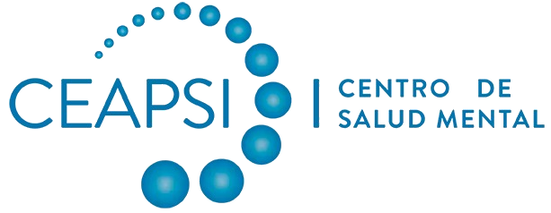

Por medio de la presente, Salud Integral CEAPSI SpA, RUT 76.225.357-7, representada por Miguel Ramírez, en su calidad de CEO, declara su intención de colaborar con el proyecto Hachiko Kids —iniciativa de los cofundadores Edgar Gomero y José María Muñoz, contacto: contacto@tumascota.app— en los términos que se describen a continuación.
El Centro de Atención Psicológica Integral (CEAPSI), fundado en 2012 y con sede en Las Condes, Santiago, es un centro de salud mental de atención multidisciplinaria especializado en niños, niñas y adolescentes. Nuestro equipo integra psicólogos, psiquiatras, psicopedagogos, fonoaudiólogos, terapeutas ocupacionales y neurólogos infantojuveniles, todos orientados a brindar tratamientos de excelencia que sean accesibles y personalizados para cada paciente y su entorno.
Entre nuestros programas, somos prestadores del Programa de Integración Escolar (PIE) del Ministerio de Educación, a través del cual acompañamos a establecimientos educacionales en la evaluación, certificación y atención de estudiantes con necesidades educativas especiales (NEE) —incluyendo niños con TDAH, TEA, dificultades de aprendizaje y otras condiciones del neurodesarrollo.
En el ejercicio de este trabajo hemos identificado con claridad una brecha persistente: los profesionales clínicos tienen visibilidad del comportamiento de los niños únicamente durante las sesiones de atención, sin acceso a información sistemática sobre sus patrones conductuales y emocionales en el entorno cotidiano. Esta limitación dificulta tanto la toma de decisiones clínicas como la comunicación efectiva con las familias entre sesiones.
Hachiko Kids es una aplicación móvil desarrollada en Chile que permite a niños entre 4 y 12 años interactuar diariamente con una mascota virtual a través de situaciones de la vida cotidiana. A partir de esas interacciones, la app genera para los padres resúmenes semanales de patrones conductuales —seguimiento de instrucciones, socialización, conducta prosocial, regulación emocional y ánimo general— expresados en lenguaje accesible y acompañados de orientaciones concretas de crianza.
El producto está diseñado para que el niño nunca se sienta evaluado: la experiencia completa se presenta como un juego con su mascota. La información registrada es conductual, no diagnóstica, y está orientada a enriquecer la comunicación entre el profesional, el niño y su familia.
Consideramos que Hachiko Kids responde directamente al vacío que observamos en nuestra práctica diaria: proporciona continuidad entre sesiones mediante datos conductuales del entorno natural del niño, registrados de forma lúdica y sin requerir intervención clínica directa en cada punto de captura.
Esta propuesta es consistente con nuestro enfoque de atención integral y personalizada: no reemplaza la intervención clínica, sino que la complementa con información continua del mundo real del niño. Valoramos que Hachiko Kids haya adoptado principios que compartimos: respeto absoluto a la privacidad de los menores, lenguaje accesible para familias —nunca diagnóstico ni clínico— y una experiencia positiva y libre de juicios para el niño.
La colaboración se estructurará en torno a un piloto de 60 días con el siguiente cronograma propuesto:
| Período | Actividad |
|---|---|
| Mayo 2026 | Firma del convenio de piloto. Onboarding de familias participantes con consentimiento informado. Acceso a la app. |
| Semanas 1–2 | Configuración de perfiles, familiarización de niños con la mascota, capacitación al equipo clínico de CEAPSI. |
| Semanas 3–8 | Uso activo de la app. Sesiones regulares de check-in por parte de los niños. |
| Semana 9 | Reporte de resultados agregados. Reunión conjunta de revisión. |
Alcance del piloto: 20 a 30 niños de los programas de atención de CEAPSI, con consentimiento informado de sus padres o tutores legales.
En el marco de este acuerdo de intención, Salud Integral CEAPSI SpA manifiesta su disposición a:
Por su parte, el equipo de Hachiko Kids manifiesta su disposición a:
Ambas partes se obligan a mantener la más estricta confidencialidad sobre la información intercambiada en el marco de esta colaboración, en particular:
Esta obligación de confidencialidad se extiende por un período de dos (2) años desde la fecha de firma de la presente carta, independientemente del resultado del piloto.
Esta carta expresa una intención de colaboración y no constituye un compromiso contractual vinculante. Los términos definitivos del piloto —incluyendo condiciones técnicas, protocolos de consentimiento, tratamiento de datos y condiciones económicas post-piloto— serán establecidos en un convenio formal separado, sujeto a la aprobación de ambas partes y al cumplimiento de los requisitos éticos y legales aplicables.
Atentamente,